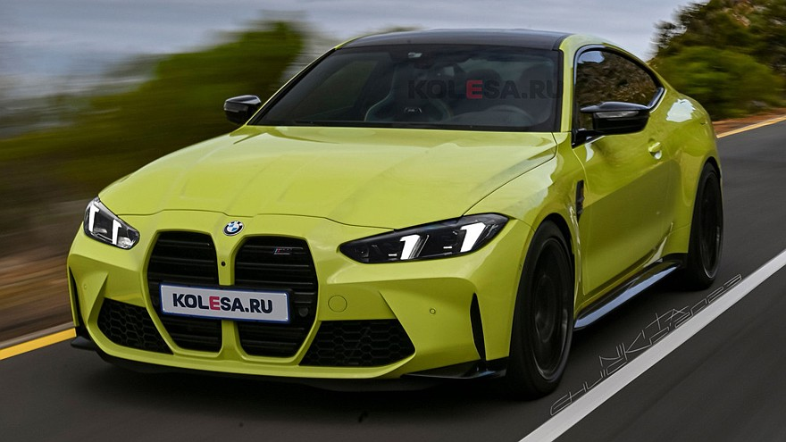

Технические характеристики
Двигатель: 3.0 л рядная шестерка с двойным турбонаддувом (S58)
Мощность: 510 л.с. (в Competition) / 530 л.с. (в CS, 2023)
Крутящий момент: 650 Нм
Разгон 0-100 км/ч: 3.5 сек (RWD) / 3.4 сек (xDrive)
Привод: Задний (RWD) или полный (M xDrive)
Коробка передач: 8-ступенчатый автомат (Steptronic) или 6-ступ МКП (только RWD)
Максимальная скорость: 250 км/ч (с пакетом M Driver’s Package – 290 км/ч)
Краткая история BMW 4 серии
1.До появления 4 серии двухдверные купе и кабриолеты выпускались в рамках 3 серии:
-E21 (1975–1983) – первое купе на базе 3 серии.
-E30 (1982–1991) – культовое купе, включая M3.
-E46 (1999–2006) – популярное купе и кабриолет.
-E92/E93 (2006–2013) – последнее поколение 3 серии Coupe/Cabrio.
2.Первое поколение (F32/F33/F36, 2013–2020)
В 2013 году BMW разделила линейку:
-4 серия стала отдельной моделью (купе, кабриолет, Gran Coupe).
-Дизайн: агрессивная решетка радиатора, низкая посадка.
-Двигатели: от 2.0 л (184 л.с.) до 3.0 л (431 л.с. в M4).
-M4 (F82/F83, 2014–2020) – замена M3 Coupe, 3.0 л битурбо (431–450 л.с.)
3. Второе поколение (G22/G23/G26, с 2020)
-Новый дизайн с огромной решеткой (спорные мнения).
-Технологии: цифровая приборная панель, гибридные версии.
-M4 (G82/G83) – до 530 л.с. (Competition), опциональный полный привод (xDrive).
-i4 (G26, с 2021) – электрическая версия (до 544 л.с. в i4 M50)
BMW 4 серия– это эволюция купе и кабриолетов на базе 3 серии, ставшая отдельной линейкой с более спортивным характером.